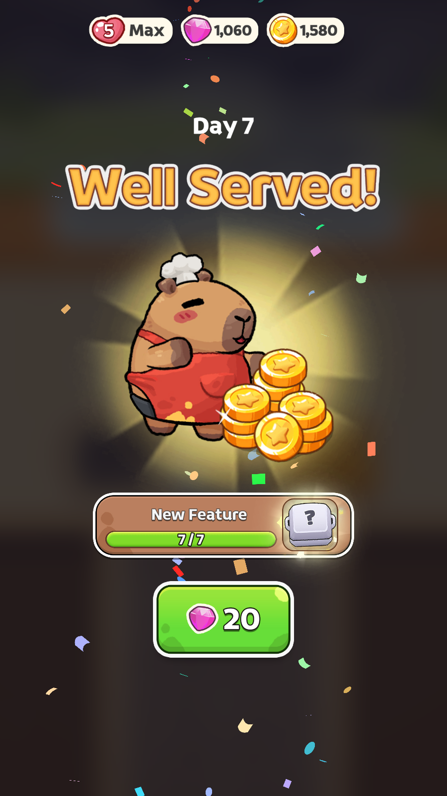
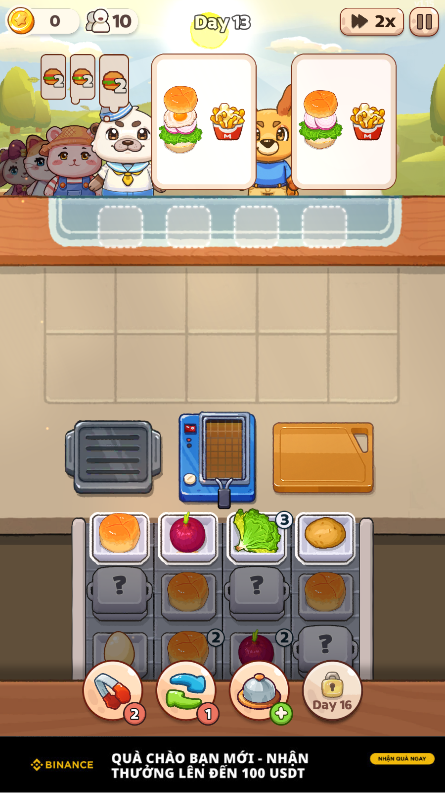
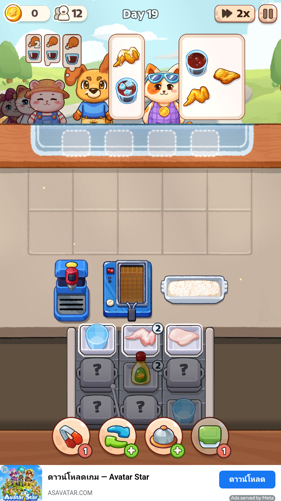

Ô ẩn (Hidden Item, token #2)
Mô tả
- Món bị che bằng hộp sắt có dấu "?": người chơi không biết đó là món gì cho tới khi nó lên hàng trên cùng của băng chuyền nguyên liệu.
- Chỉ hàng trên cùng chạm được, nên ô ẩn buộc người chơi lên kế hoạch khi chưa đủ thông tin (không thể nhắm trước món sâu 2–3 hàng).
- Có trong 425/1 030 level mặc định của APK (447/1 090 level server live 16/11); trong map burger xuất hiện đầu tiên ở level 8, mỗi level có trung bình 12,5 ô ẩn (tối đa 53).
- Popup giới thiệu "Hidden Item" (nút Got it!) hiện ở đầu level đầu tiên có ô ẩn; thanh "New Feature" ở màn thắng báo trước cơ chế này.
Thiết kế chi tiết
Tóm tắt thiết kế
- Code Hộp "?" chỉ lộ khi đã ở hàng 0 và đã dừng (
ConveyorGrid.RevealIfSettledAtFront): không có cách xem trước ngoài booster. - Code Cờ ẩn chỉ gán lúc khởi tạo, không bao giờ che lại: lộ một lần là xong (kể cả sau Swap Row).
- APK 425/1 030 level dùng ô ẩn, tức 41%; trung bình 12,5 ô ẩn / level. Đây là cơ chế phổ thông, không phải chướng ngại hiếm.
- Live 16/11 Server live 16/11 có 447/1 090 level dùng ô ẩn; bento tăng từ 4 lên 27 level.
- Playtest Day 13–19 cho thấy "?" ở hàng 2–3; Day 19 (3 cột) có 4 ô ẩn cùng lúc, ép người chơi lấy theo thứ tự thấy được.
- Nhận định Ô ẩn là cách rẻ nhất để thêm độ khó thông tin: không cần UI mới, không thêm luật, chỉ đổi thông tin có sẵn tới người chơi.
Luồng người chơi từng bước
- Báo trước ở màn thắngGiao diện CodeThắng level N: thanh "New Feature" lấp đầy; khi level N+1 mang Hidden lần đầu, popup "Hidden Item" nút "Awesome" mở tự động sau hiệu ứng sáng (
UINextFeatherButton).
Popup "New Feature" Hidden Item sau khi thắng level liền trước (bản 1.11, 25/10) - Nhìn bàn chơiNgười chơi PlaytestHàng đầu thấy món; các hàng sau có hộp "?" xen kẽ với món thấy rõ.

Day 13 (burger L13): 3 hộp sắt "?" ở hàng 2–3, hàng đầu đã lộ (bun, hành, xà lách, khoai) - Lấy ô hàng đầuNgười chơi CodeChạm ô hàng 0; cột dồn 1 hàng.
- Ô ẩn lên hàng 0 và lộHệ thống CodeKhi dừng hẳn ở hàng 0,
RevealIfSettledAtFrontlộ món; từ đây chạm lấy như ô thường.
Day 19: lưới 3 cột, 4 hộp "?" cùng lúc, chỉ hàng đầu (ly, cánh gà, ức gà) thấy rõ


Số level dùng ô ẩn theo map
| Map | APK: số level (level đầu) | Server live 16/11: số level (level đầu) |
|---|---|---|
| burger | 48 (L8) | 47 (L8) |
| coffee | 43 (L5) | 40 (L5) |
| sushi | 23 (L3) | 28 (L3) |
| pasta | 44 (L3) | 47 (L3) |
| icecream | 36 (L4) | 36 (L4) |
| sandwich | 46 (L7) | 46 (L7) |
| tteokbokki | 45 (L4) | 44 (L4) |
| seafood | 52 (L4) | 53 (L4) |
| dimsum | 25 (L7) | 32 (L7) |
| pizza | 59 (L2) | 22 (L2) |
| bento | 4 (L7) | 27 (L7) |
| croissant | - | 19 (L1) |
| tacos | - | 6 (L13) |
| Tổng | 425 / 1 030 level chơi được | 447 / 1 090 level chơi được |
Nguồn: Data/levels/_stats.json (APK), Docs/LEVEL_DATA.md (server live 16/11).
Mã hoá trong chuỗi level
| Thành phần | Cú pháp | Ví dụ / ghi chú |
|---|---|---|
| Ô hàng đợi | id[:amount]#effect | ví dụ 13#2 = ô id 13 bị ẩn |
| Effect Hidden | #2 (không tham số) | IngredientSlotStatus Hidden = 2 |
| Vị trí chuỗi | phần thứ 3 của chuỗi, sau ~ thứ hai | khách ~ lưới ~ hàng đợi (NewToolLevelPreview.GetObstacleKeysOfLevel tách theo ~) |
Cú pháp theo Tools/data/fp_level_syntax.py (đã đối chiếu IngredientQueueTranslator.ParseEffectToken).
Vận dụng cho game khác
- Che thông tin thay vì thêm luật mới: một icon "?" và một điều kiện lộ (ở hàng đầu) đủ tạo độ khó và cảm giác "mở hộp".
- Chỉ lộ khi vật đã đứng yên: tránh lộ nửa chừng khi đang trượt, giữ ý đồ bất ngờ.
Bảng tổng hợp mọi tính năng đã làm chi tiết: FoodiePop_ThietKeChiTiet.xlsx.
Mở khóa & điểm vào
Không có cờ mở khoá riêng: cơ chế bật khi chuỗi hàng đợi của level có token #2 (xem StackModeService.BuildCellsFromQueue). Burger: level 8 (Day 8). Popup giới thiệu chạy một lần (PlayerPrefs IntroSlotMechanic_Hidden, UIInLevelCakeOrder.IsDoneIntroNewSlotMechanics).
Điểm vào:
- Đầu level có ô ẩn: popup
UIPopup-IntroMechanic-Slot-Hidden("Hidden Item" / "Got it!") nếu chưa xem - Màn thắng của level liền trước: thanh "New Feature x/y" và popup
UIPopupNewFeather("Hidden Item" / "Awesome") - Bàn chơi: các hộp "?" trong băng chuyền nguyên liệu
Cách hoạt động
- Level được tải: chuỗi hàng đợi (phần thứ 3 của chuỗi level, cột tách
%, ô tách,) được parse, ô có#2đánh dấu Hidden (StackModeService.TryGetStatusvới giá trị Hidden củaIngredientSlotStatus). StackModeService.BuildCellsFromQueuetạoConveyorBundlecho từng ô, gắn cờHidden = true;IngredientConveyorItemnhận cờ qua init và vẽ hộp "?" (không có badge số lượng).- Trước khi level bắt đầu,
UIInLevelCakeOrder.ShowTutorialquét level: nếu có Hidden và chưa có cờIntroSlotMechanic_Hiddenthì mở popup giới thiệu. - Người chơi lấy các ô hàng trên; cột dồn lên 1 hàng (
ConveyorGrid.Advance). - Khi ô ẩn nằm ở hàng 0 và đã dừng hẳn (
ConveyorGrid.IsSettled),ConveyorGrid.RevealIfSettledAtFrontgọiIngredientConveyorItem.Revealđể lộ món. - Món đã lộ trở thành ô thường (badge số lượng, chạm lấy được). Cờ
_hiddenchỉ được gán lúc khởi tạo và bị xoá trongReveal, không có đường nào gán lại true.
Ảnh chụp
Bấm ảnh để phóng to, dùng phím ← → để chuyển ảnh. Nhãn màu cho biết nguồn bằng chứng của ảnh.
Số liệu chính
| Chỉ số | Giá trị | Nguồn |
|---|---|---|
| Level dùng ô ẩn (APK) | 425 / 1 030 | Data/levels/_stats.json (queue.Hidden) |
| Level dùng ô ẩn (server live 16/11) | 447 / 1 090 | Docs/LEVEL_DATA.md |
| Ô ẩn mỗi level (level có ô ẩn, APK) | trung bình 12,5 / tối đa 53 / tối thiểu 1 | Data/levels/*/L*.json |
| Level đầu tiên (burger) | L8 | Data/levels/_stats.json |
Use case (9)
Bấm vào từng use case để mở. Mở/đóng tất cả
UC-01 Ô ẩn xuất hiện trong hàng đợi
Các bước- Parse chuỗi hàng đợi, ô có
#2được đánh dấu Hidden - Tạo bundle Hidden = true
- Vẽ hộp "?" thay vì món
| Actor | System |
|---|---|
| Trigger | Level tải xong |
| Điều kiện | Level có token #2 |
| Kết quả | Người chơi thấy "?" ở các hàng sâu |
| Quy tắc / số liệu | Token #2 không có tham số; tổ hợp được với #1:n (Freeze) và #3:c (Key) trên cùng ô theo parser |
| Evidence | StackModeService.BuildCellsFromQueue |
UC-02 Ô ẩn lên hàng trên cùng và lộ ra
Các bước- Cột dồn 1 hàng
- Ô ẩn dừng ở hàng 0
RevealIfSettledAtFrontkiểm traRow == 0vàIsSettledRevealđổi hộp thành món thật
| Actor | Player |
|---|---|
| Trigger | Cột dồn lên sau khi lấy ô phía trước |
| Điều kiện | Có ô ẩn ở hàng 1 |
| Kết quả | Món lộ ra, chạm lấy được |
| Quy tắc / số liệu | Chỉ lộ khi Row = 0 và đã dừng; đang trượt thì chưa lộ (Playtest: ô "?" lộ khi ô phía trước được lấy hết) |
| Evidence | ConveyorGrid.RevealIfSettledAtFront |
UC-03 Chạm vào ô ẩn khi chưa ở hàng trên
Các bướcConveyorSlot.IsPickabletrả false vìRow != 0ConveyorPickup.TryTapkhông lấy được
| Actor | Player |
|---|---|
| Trigger | Người chơi chạm hộp "?" ở hàng 2+ |
| Điều kiện | Ô ở hàng ≥ 1 |
| Kết quả | Không có hiệu ứng lấy; không mất gì |
| Quy tắc / số liệu | Luật chung cho mọi ô ở hàng sâu, không riêng ô ẩn |
| Evidence | ConveyorSlot.IsPickable |
UC-04 Lấy ô ẩn đã lộ ở hàng trên
Các bướcConveyorPickup.TryTap→Allows→HasRoomFor- Món bay tới trạm / lưới
| Actor | Player |
|---|---|
| Trigger | Chạm ô ở hàng 0 đã lộ |
| Kết quả | Như ô thường: cột dồn lên, lộ tiếp ô sau |
| Quy tắc / số liệu | Cần đủ chỗ trên lưới 5×2 (HasRoomFor); không có điều kiện đặc biệt cho ô từng ẩn |
| Evidence | ConveyorPickup.HasRoomFor |
UC-05 Booster Swap Row đảo hàng khi có ô ẩn
Các bướcIngredientSpawnerController.PromoteRowToFrontxoay hàng- Ô ẩn lên hàng 0 sau xoay được lộ qua
RevealIfSettledAtFront
| Actor | Player |
|---|---|
| Trigger | Dùng Swap Row (đảo 3 hàng trên) |
| Điều kiện | Có booster Swap Row |
| Kết quả | Booster có thể "mở" ô ẩn sớm; ô đã lộ không bị che lại |
| Quy tắc / số liệu | _hidden không bao giờ được gán true sau khởi tạo (đọc code 1.15) |
| Evidence | IngredientSpawnerController.PromoteRowToFront |
UC-06 Tongs (chọn bất kỳ) với ô ẩn
Các bước- Tongs chỉ chọn được trong
pickAnyRowshàng đầu (RCbooster_ingredient_pickcóvisibleRows;7) ConveyorPickup.IsPickAnyCandidatelọc ô
| Actor | Player |
|---|---|
| Trigger | Dùng booster Tongs / BeginPickAnyIngredient |
| Kết quả | Ô nằm trong 7 hàng đầu có thể chọn kể cả khi chưa ở hàng 0 |
| Quy tắc / số liệu | Chưa xác minh Tongs có lộ món ở màn chọn hay không (xem gaps) |
| Evidence | ConveyorPickup.IsPickAnyCandidate |
UC-07 Popup giới thiệu ở đầu level
Các bướcUIInLevelCakeOrder.ShowTutorialquétIngredientSlotStatuscủa level- Tìm cấu hình trong
_introNewObstacleConfigs(slotStatus 2 = Hidden) - Mở
UIPopup-IntroMechanic-Slot-Hidden Variant - Bấm "Got it!" →
SetDoneIntroNewSlotMechanics
| Actor | Player |
|---|---|
| Trigger | Vào level đầu tiên có Hidden |
| Điều kiện | Chưa có cờ intro |
| Kết quả | Cờ PlayerPrefs IntroSlotMechanic_Hidden = 1, popup không hiện lại |
| Quy tắc / số liệu | Hàng đợi popup: Grid → Slot → Linked → Combined, mỗi cái một lần |
| Evidence | UIInLevelCakeOrder.ShowTutorial |
UC-08 Popup "New Feature" ở màn thắng liền trước
Các bướcUIPopupNewFeather.GetNewObstacleKeystrả khoáSlot-Hidden- Thanh tiến độ
UINextFeatherButtonlấp đầy - Popup "Hidden Item – Hidden items are revealed only when they reach the top row." nút "Awesome"
| Actor | Player |
|---|---|
| Trigger | Thắng level N khi level N+1 có ô ẩn lần đầu |
| Điều kiện | Level kế tiếp chứa cơ chế mới |
| Kết quả | Người chơi được báo trước cơ chế mới |
| Quy tắc / số liệu | Burger: Hidden đầu tiên ở L8 → popup sau khi thắng L7 (bản 1.11: "New Feature 7/7") |
| Evidence | UIPopupNewFeather.GetNewObstacleKeys |
UC-09 Level đã có sẵn cờ intro (tài khoản khôi phục)
Các bướcIsDoneIntroNewSlotMechanicstrả true- Bỏ qua popup
| Actor | Player |
|---|---|
| Trigger | Vào level có ô ẩn khi PlayerPrefs đã có cờ |
| Điều kiện | Tài khoản khôi phục từ cloud |
| Kết quả | Chơi thẳng (Playtest 16/11: Day 13–20 không có popup "Got it!" ở đầu level; prefs cuối phiên có đủ 6 cờ Intro*=1) |
| Quy tắc / số liệu | Save khôi phục sao chép cả cờ Intro* (CookOrderSaveSync) |
| Evidence | CookOrderSaveSync.GetPrefKeys |
Cấu hình (9)
Gộp mọi nguồn: const trong code, giá trị mặc định trong APK, storage key, AB test, cờ server.
| Nguồn | Key | Kiểu | Giá trị | Ý nghĩa | Nơi định nghĩa |
|---|---|---|---|---|---|
| level string | queue token #2 | effect | Hidden (không tham số) | đánh dấu ô hàng đợi bị che | IngredientQueueTranslator.ParseEffectToken, IngredientSlotStatus Hidden = 2 |
| enum | IngredientSlotStatus | enum | None 0, Freeze 1, Hidden 2, Key 3 | trạng thái ô hàng đợi | CakeOrder.IngredientSlotStatus |
| field | ConveyorBundle.Hidden | bool | gán từ token #2 khi dựng bundle | cờ che món | AnhPD.FoodOrder.ConveyorBundle |
| asset | visibleRows (scene IngredientSpawnerController) | int | 0 (cả 11 scene map) | 0 = không giới hạn khung nhìn hàng đợi | FS*.unity |
| asset | rows / columnWidth (scene) | int / float | rows 8, columnWidth 1,11 (FSBurger) | số hàng và bề rộng cột băng chuyền | FSBurger.unity |
| json default (RC frc_defaults_115) | booster_config booster_ingredient_pick | string | booster_ingredient_pick;1;3;0;600;99;visibleRows;7 | Tongs: bật, mở Day 3, giá 600, chọn trong 7 hàng đầu | RC booster_config |
| storage key | PlayerPrefs IntroSlotMechanic_Hidden | int | 1 = đã xem popup | cờ intro | UIInLevelCakeOrder.GetKeyIsDoneIntroNewSlotMechanics |
| asset | UINewFeartherConfig["Slot-Hidden"] | NewFeatherConfig | featherName "Hidden Item"; featherDesc "Hidden items are revealed only when they reach the top row."; key hidden_item | nội dung popup New Feature | UINewFeatureConfigObstacle.asset |
| asset (UI_InGame en-GB) | Intro popup text | string | Title "Hidden Item"; mô tả "Hidden items are revealed only when they reach the top row."; nút "Got it!" | popup UIPopup-IntroMechanic-Slot-Hidden Variant | Map-common_assets/Prefabs/UI/InGame |
Backend / server
| Command | Chiều | Mục đích |
|---|---|---|
Remote Config map_config_<map>_lv_<n> / map_config_<map>_lv_all_override_default | server→client | Chuỗi level (khách ~ lưới ~ hàng đợi) mang token của cơ chế này; server live 16/11 ghi đè 1 090 level (xem Docs/LEVEL_DATA.md). Không có API riêng cho cơ chế. |
Giao diện (UI)
| Element | Class | Mục đích |
|---|---|---|
| Hộp "?" trên băng chuyền | AnhPD.FoodOrder.IngredientConveyorItem | vẽ trạng thái ẩn, hiệu ứng lộ |
| Popup giới thiệu cơ chế | CakeOrder.InGame.UIPopupIntroNewMechanics | prefab Slot-Hidden, nút Got it! |
| Nút "New Feature" ở màn thắng + popup | TrungKien.UI.NewFearther.UINextFeatherButton | thanh tiến độ tới cơ chế kế tiếp, mở UIPopupNewFeather |
Storage keys
IntroSlotMechanic_Hidden
Còn thiếu / chưa xác minh
- Không thấy event analytics riêng cho cơ chế này (đã tìm trong ConveyorGrid, IngredientConveyorItem, UIPopupNewFeather).
- Chưa xác minh Tongs có lộ món ô ẩn khi chọn hay giữ "?" (đọc được
IsPickAnyCandidatenhưng chưa thấy nhánh Hidden). - Chưa đo trực tiếp thời điểm hiện popup intro ở đầu level trên bản 1.15: tài khoản playtest đã có cờ (prefs cuối phiên).
- Ô ẩn đã thấy ở Day 13 (burger L13) dù popup New Feature báo từ L8: tài khoản khôi phục từ save ngày 25/10 đã qua cơ chế này.
Tính năng liên quan
Băng chuyền nguyên liệu (ConveyorGrid) Món liên kết (Linked Items, nhóm `$` thứ hai) Ô đóng băng (Frozen Item, token #1:n) Booster trong màn Định dạng level, độ khó & thống kê Giới thiệu tính năng mới (New Feature x/N) Hướng dẫn trong màn
Nguồn đã đọc
_analysis/code/decompiled/Assembly-CSharp/AnhPD.FoodOrder.ConveyorGrid.c (RevealIfSettledAtFront, IsSettled)_analysis/code/decompiled/Assembly-CSharp/AnhPD.FoodOrder.IngredientConveyorItem.c (Reveal, _hidden)_analysis/code/decompiled/Assembly-CSharp/AnhPD.FoodOrder.StackModeService.c_analysis/code/decompiled/CakeOrder/CakeOrder.InGame.UIInLevelCakeOrder.cData/config/UINewFeartherConfig.json_rip/ExportedProject/Assets/_Production/Map-common_assets/Prefabs/UI/InGame/UIPopup-IntroMechanic-Slot-Hidden Variant.prefabDocs/LEVEL_DATA.mdData/levels/*_analysis/live/fp_20261116/RESULTS_LIVE.mdF:/0_Phuc/Clone/Pop/Docs/decode/GAMEPLAY.md (H21, gợi ý 1.11)